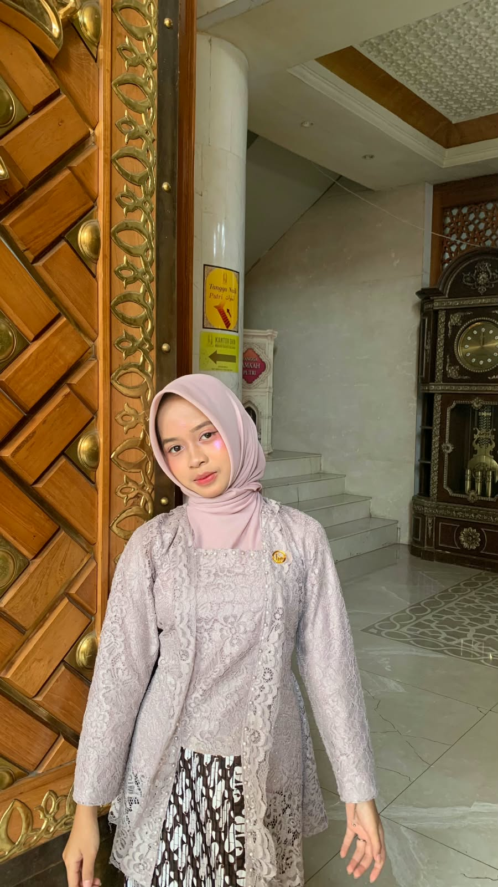

|
۶۟ৎ MY LITTLE WORLD ۶۟ৎ Personal Website Mengenal Cerita dan Kehidupan Saya |
 |
|
 Hidayatul Munawaroh X SIJA 2 SMK Negeri 2 Yogyakarta |
About MeHalooo semuanya! Welcome to My Little World! Ini adalah website personal yang saya buat untuk memperkenalkan sedikit tentang diri saya kepada kalian. Di sini, kalian bisa menemukan berbagai informasi tentang saya, mulai dari hobi, hal-hal yang saya sukai, hingga beberapa cerita kecil lainnya. Website ini merupakan proyek praktik pembelajaran HTML di sekolah. Dalam proyek ini, saya mencoba membuat sebuah website personal dari awal dengan menggunakan HTML. Saya belajar bagaimana menyusun struktur halaman, menambahkan teks dan gambar, membuat tabel, serta mengatur berbagai elemen agar tampilannya lebih menarik dan mudah dipahami. Melalui proyek ini, saya ingin menunjukkan hasil dari apa yang sudah saya pelajari sekaligus menuangkan sedikit kreativitas ke dalam sebuah website. Saya juga mencoba memilih warna dan desain yang sesuai agar tampilannya terasa lebih menarik. Nah, daripada hanya membaca bagian ini, yuk, lanjut jelajahi setiap bagian website dan kenali lebih banyak tentang saya!
|